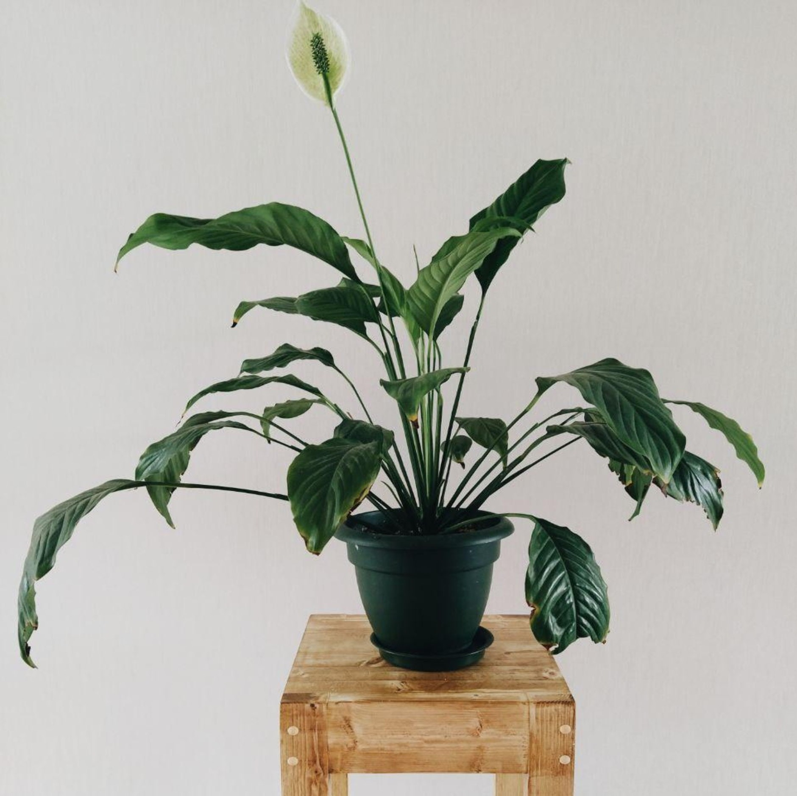

Peace Lily
Spathiphyllum spp.

Peace lilies are a favorite flowering houseplant.
A striking plant when used in mass display, the peace lily blooms in spring with long-lasting flower stalks that hover over the foliage.
The plant has glossy oval leaves with points that emerge from the soil. A well-grown peace lily may bloom twice a year, resulting in several months of flowers.
Keep in mind peace lily plants are considered toxic to pets and humans.
Care
Peace lilies enjoy moderately moist soil and filtered sunlight, not direct, along with consistently temperate conditions.
Curled, pale leaves generally indicate that the plant is receiving too much light and scorched leaves indicate too much direct sun.
These plants are free of most of the diseases and pests that can plague indoor plants, but they can be susceptible to scale and mealybugs.
Peace lilies like rich, loose potting soil that contains plenty of organic matter and
well-draining soil. Pot the plant in a terracotta or clay vessel that can absorb excess moisture.
Take care to water them only when they're dry at least an inch below the surface. During the summer,
mist peace lilies frequently but in winter, reduce watering and never allow the soil to dry out completely.